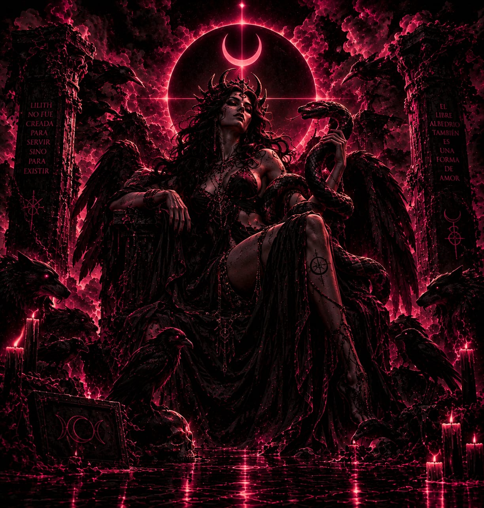

𝕀ℕ𝔻𝔼ℙ𝔼ℕ𝔻𝔼ℕℂ𝕀𝔸
𝑹𝒆𝒑𝒓𝒆𝒔𝒆𝒏𝒕𝒂 𝒍𝒂 𝒗𝒐𝒍𝒖𝒏𝒕𝒂𝒅 𝒅𝒆 𝒅𝒆𝒄𝒊𝒅𝒊𝒓 𝒔𝒐𝒃𝒓𝒆 𝒆𝒍 𝒑𝒓𝒐𝒑𝒊𝒐 𝒅𝒆𝒔𝒕𝒊𝒏𝒐 𝒚 𝒓𝒆𝒄𝒉𝒂𝒛𝒂𝒓 𝒍𝒂𝒔 𝒊𝒎𝒑𝒐𝒔𝒊𝒄𝒊𝒐𝒏𝒆𝒔 𝒆𝒙𝒕𝒆𝒓𝒏𝒂𝒔.
𝓐𝓡𝓒𝓗𝓘𝓥𝓞 𝓓𝓔 𝓔𝓝𝓣𝓘𝓓𝓐𝓓𝓔𝓢 · 𝓡𝓔𝓖𝓘𝓢𝓣𝓡𝓞 #02🐍
𝗟𝗔 𝗙𝗜𝗚𝗨𝗥𝗔 𝗗𝗘 𝗟𝗔 𝗥𝗘𝗕𝗘𝗟𝗗Í𝗔 𝗬 𝗟𝗔 𝗡𝗢𝗖𝗛𝗘
ℒ𝒾𝓁𝒾𝓉𝒽 ℯ𝓈 𝓊𝓃𝒶 𝒻𝒾ℊ𝓊𝓇𝒶 𝓅𝓇ℯ𝓈ℯ𝓃𝓉ℯ ℯ𝓃 𝒹𝒾𝓈𝓉𝒾𝓃𝓉𝒶𝓈 𝓉𝓇𝒶𝒹𝒾𝒸𝒾ℴ𝓃ℯ𝓈 𝓂𝒾𝓉ℴ𝓁óℊ𝒾𝒸𝒶𝓈 𝓎 𝓇ℯ𝓁𝒾ℊ𝒾ℴ𝓈𝒶𝓈. 𝒮𝓊 𝒽𝒾𝓈𝓉ℴ𝓇𝒾𝒶 ℯ𝓋ℴ𝓁𝓊𝒸𝒾ℴ𝓃ó 𝒶 𝓉𝓇𝒶𝓋é𝓈 𝒹ℯ 𝓁ℴ𝓈 𝓈𝒾ℊ𝓁ℴ𝓈, 𝒸ℴ𝓃𝓋𝒾𝓇𝓉𝒾é𝓃𝒹ℴ𝓁𝒶 ℯ𝓃 𝓊𝓃 𝓈í𝓂𝒷ℴ𝓁ℴ 𝒶𝓈ℴ𝒸𝒾𝒶𝒹ℴ 𝒸ℴ𝓃 𝓁𝒶 𝒾𝓃𝒹ℯ𝓅ℯ𝓃𝒹ℯ𝓃𝒸𝒾𝒶, 𝓁𝒶 ℴ𝓈𝒸𝓊𝓇𝒾𝒹𝒶𝒹 𝓎 𝓁ℴ 𝒹ℯ𝓈𝒸ℴ𝓃ℴ𝒸𝒾𝒹ℴ.

𝐑𝐄𝐆𝐈𝐒𝐓𝐑𝐎 𝐇𝐈𝐒𝐓Ó𝐑𝐈𝐂𝐎
𝘓𝘢𝘴 𝘳𝘢í𝘤𝘦𝘴 𝘥𝘦 𝘓𝘪𝘭𝘪𝘵𝘩 𝘴𝘦 𝘳𝘦𝘭𝘢𝘤𝘪𝘰𝘯𝘢𝘯 𝘤𝘰𝘯 𝘢𝘯𝘵𝘪𝘨𝘶𝘢𝘴 𝘵𝘳𝘢𝘥𝘪𝘤𝘪𝘰𝘯𝘦𝘴 𝘮𝘦𝘴𝘰𝘱𝘰𝘵á𝘮𝘪𝘤𝘢𝘴, 𝘥𝘰𝘯𝘥𝘦 𝘢𝘱𝘢𝘳𝘦𝘤𝘦𝘯 𝘴𝘦𝘳𝘦𝘴 𝘺 𝘦𝘴𝘱í𝘳𝘪𝘵𝘶𝘴 𝘤𝘰𝘯𝘰𝘤𝘪𝘥𝘰𝘴 𝘮𝘦𝘥𝘪𝘢𝘯𝘵𝘦 𝘵é𝘳𝘮𝘪𝘯𝘰𝘴 𝘤𝘰𝘮𝘰 𝘭𝘪𝘭ī𝘵𝘶. 𝘊𝘰𝘯 𝘦𝘭 𝘱𝘢𝘴𝘰 𝘥𝘦𝘭 𝘵𝘪𝘦𝘮𝘱𝘰, 𝘦𝘴𝘵𝘢𝘴 𝘧𝘪𝘨𝘶𝘳𝘢𝘴 𝘴𝘦 𝘳𝘦𝘭𝘢𝘤𝘪𝘰𝘯𝘢𝘳𝘰𝘯 𝘤𝘰𝘯 𝘭𝘢𝘴 𝘵𝘳𝘢𝘥𝘪𝘤𝘪𝘰𝘯𝘦𝘴 𝘫𝘶𝘥í𝘢𝘴, 𝘥𝘢𝘯𝘥𝘰 𝘭𝘶𝘨𝘢𝘳 𝘢 𝘥𝘪𝘧𝘦𝘳𝘦𝘯𝘵𝘦𝘴 𝘪𝘯𝘵𝘦𝘳𝘱𝘳𝘦𝘵𝘢𝘤𝘪𝘰𝘯𝘦𝘴. 𝘜𝘯𝘢 𝘥𝘦 𝘭𝘢𝘴 𝘯𝘢𝘳𝘳𝘢𝘤𝘪𝘰𝘯𝘦𝘴 𝘮á𝘴 𝘤𝘰𝘯𝘰𝘤𝘪𝘥𝘢𝘴 𝘢𝘱𝘢𝘳𝘦𝘤𝘦 𝘦𝘯 𝘦𝘭 𝘈𝘭𝘱𝘩𝘢𝘣𝘦𝘵 𝘰𝘧 𝘉𝘦𝘯 𝘚𝘪𝘳𝘢, 𝘶𝘯𝘢 𝘰𝘣𝘳𝘢 𝘮𝘦𝘥𝘪𝘦𝘷𝘢𝘭 𝘲𝘶𝘦 𝘱𝘳𝘦𝘴𝘦𝘯𝘵𝘢 𝘢 𝘓𝘪𝘭𝘪𝘵𝘩 𝘤𝘰𝘮𝘰 𝘭𝘢 𝘱𝘳𝘪𝘮𝘦𝘳𝘢 𝘦𝘴𝘱𝘰𝘴𝘢 𝘥𝘦 𝘈𝘥á𝘯. 𝘚𝘦𝘨ú𝘯 𝘦𝘴𝘵𝘦 𝘳𝘦𝘭𝘢𝘵𝘰, 𝘓𝘪𝘭𝘪𝘵𝘩 𝘢𝘣𝘢𝘯𝘥𝘰𝘯𝘢 𝘦𝘭 𝘌𝘥é𝘯 𝘥𝘦𝘴𝘱𝘶é𝘴 𝘥𝘦 𝘯𝘦𝘨𝘢𝘳𝘴𝘦 𝘢 𝘢𝘤𝘦𝘱𝘵𝘢𝘳 𝘶𝘯𝘢 𝘱𝘰𝘴𝘪𝘤𝘪ó𝘯 𝘥𝘦 𝘴𝘶𝘣𝘰𝘳𝘥𝘪𝘯𝘢𝘤𝘪ó𝘯. 𝘌𝘴𝘵𝘢 𝘩𝘪𝘴𝘵𝘰𝘳𝘪𝘢 𝘤𝘰𝘯𝘵𝘳𝘪𝘣𝘶𝘺ó 𝘢 𝘤𝘰𝘯𝘷𝘦𝘳𝘵𝘪𝘳𝘭𝘢 𝘦𝘯 𝘶𝘯𝘢 𝘧𝘪𝘨𝘶𝘳𝘢 𝘢𝘴𝘰𝘤𝘪𝘢𝘥𝘢 𝘤𝘰𝘯 𝘭𝘢 𝘳𝘦𝘣𝘦𝘭𝘥í𝘢, 𝘭𝘢 𝘢𝘶𝘵𝘰𝘯𝘰𝘮í𝘢 𝘺 𝘭𝘢 𝘵𝘳𝘢𝘯𝘴𝘨𝘳𝘦𝘴𝘪ó𝘯.
𝕀ℕ𝕋𝔼ℝℙℝ𝔼𝕋𝔸ℂ𝕀Óℕ 𝕊𝕀𝕄𝔹Ó𝕃𝕀ℂ𝔸
𝘔á𝘴 𝘢𝘭𝘭á 𝘥𝘦 𝘴𝘶𝘴 𝘳𝘦𝘭𝘢𝘵𝘰𝘴, 𝘓𝘪𝘭𝘪𝘵𝘩 𝘳𝘦𝘱𝘳𝘦𝘴𝘦𝘯𝘵𝘢 𝘥𝘪𝘧𝘦𝘳𝘦𝘯𝘵𝘦𝘴 𝘪𝘥𝘦𝘢𝘴 𝘳𝘦𝘭𝘢𝘤𝘪𝘰𝘯𝘢𝘥𝘢𝘴 𝘤𝘰𝘯 𝘭𝘢 𝘭𝘪𝘣𝘦𝘳𝘵𝘢𝘥, 𝘭𝘢 𝘯𝘰𝘤𝘩𝘦 𝘺 𝘭𝘢 𝘯𝘢𝘵𝘶𝘳𝘢𝘭𝘦𝘻𝘢 𝘪𝘯𝘥𝘰𝘮𝘢𝘣𝘭𝘦.
𝑹𝒆𝒑𝒓𝒆𝒔𝒆𝒏𝒕𝒂 𝒍𝒂 𝒗𝒐𝒍𝒖𝒏𝒕𝒂𝒅 𝒅𝒆 𝒅𝒆𝒄𝒊𝒅𝒊𝒓 𝒔𝒐𝒃𝒓𝒆 𝒆𝒍 𝒑𝒓𝒐𝒑𝒊𝒐 𝒅𝒆𝒔𝒕𝒊𝒏𝒐 𝒚 𝒓𝒆𝒄𝒉𝒂𝒛𝒂𝒓 𝒍𝒂𝒔 𝒊𝒎𝒑𝒐𝒔𝒊𝒄𝒊𝒐𝒏𝒆𝒔 𝒆𝒙𝒕𝒆𝒓𝒏𝒂𝒔.
𝑺𝒖 𝒂𝒔𝒐𝒄𝒊𝒂𝒄𝒊ó𝒏 𝒄𝒐𝒏 𝒍𝒂 𝒏𝒐𝒄𝒉𝒆 𝒓𝒆𝒇𝒍𝒆𝒋𝒂 𝒂𝒒𝒖𝒆𝒍𝒍𝒐 𝒒𝒖𝒆 𝒑𝒆𝒓𝒎𝒂𝒏𝒆𝒄𝒆 𝒐𝒄𝒖𝒍𝒕𝒐, 𝒅𝒆𝒔𝒄𝒐𝒏𝒐𝒄𝒊𝒅𝒐 𝒚 𝒇𝒖𝒆𝒓𝒂 𝒅𝒆 𝒍𝒐 𝒄𝒐𝒏𝒗𝒆𝒏𝒄𝒊𝒐𝒏𝒂𝒍.
𝑬𝒏 𝒂𝒍𝒈𝒖𝒏𝒂𝒔 𝒊𝒏𝒕𝒆𝒓𝒑𝒓𝒆𝒕𝒂𝒄𝒊𝒐𝒏𝒆𝒔 𝒎𝒐𝒅𝒆𝒓𝒏𝒂𝒔, 𝒔𝒊𝒎𝒃𝒐𝒍𝒊𝒛𝒂 𝒍𝒂 𝒓𝒆𝒔𝒊𝒔𝒕𝒆𝒏𝒄𝒊𝒂 𝒇𝒓𝒆𝒏𝒕𝒆 𝒂 𝒍𝒂 𝒂𝒖𝒕𝒐𝒓𝒊𝒅𝒂𝒅 𝒚 𝒍𝒂𝒔 𝒆𝒔𝒕𝒓𝒖𝒄𝒕𝒖𝒓𝒂𝒔 𝒅𝒆 𝒔𝒖𝒃𝒐𝒓𝒅𝒊𝒏𝒂𝒄𝒊ó𝒏.
𝑩𝑰𝑩𝑳𝑰𝑶𝑻𝑬𝑪𝑨 𝑫𝑬𝑳 𝑨𝑹𝑪𝑯𝑰𝑽𝑶
𝓣𝓮𝔁𝓽𝓸𝓼 𝔂 𝓮𝓼𝓽𝓾𝓭𝓲𝓸𝓼 𝓺𝓾𝓮 𝓹𝓮𝓻𝓶𝓲𝓽𝓮𝓷 𝓮𝔁𝓹𝓵𝓸𝓻𝓪𝓻 𝓵𝓪 𝓮𝓿𝓸𝓵𝓾𝓬𝓲ó𝓷 𝓱𝓲𝓼𝓽ó𝓻𝓲𝓬𝓪 𝓭𝓮 𝓵𝓪 𝓯𝓲𝓰𝓾𝓻𝓪 𝓭𝓮 𝓛𝓲𝓵𝓲𝓽𝓱.
𝑅𝑒𝑐𝑜𝑝𝑖𝑙𝑎𝑐𝑖ó𝑛 𝑠𝑜𝑏𝑟𝑒 𝐿𝑖𝑙𝑖𝑡ℎ 𝑑𝑒𝑛𝑡𝑟𝑜 𝑑𝑒 𝑙𝑎 𝑑𝑒𝑚𝑜𝑛𝑜𝑙𝑜𝑔í𝑎 𝑗𝑢𝑑í𝑎 𝑦 𝑠𝑢𝑠 𝑎𝑛𝑡𝑒𝑐𝑒𝑑𝑒𝑛𝑡𝑒𝑠 𝑒𝑛 𝑙𝑎𝑠 𝑎𝑛𝑡𝑖𝑔𝑢𝑎𝑠 𝑡𝑟𝑎𝑑𝑖𝑐𝑖𝑜𝑛𝑒𝑠 𝑚𝑒𝑠𝑜𝑝𝑜𝑡á𝑚𝑖𝑐𝑎𝑠.
𝓒𝓞𝓝𝓢𝓤𝓛𝓣𝓐𝓡 𝓕𝓤𝓔𝓝𝓣𝓔𝐼𝑛𝑣𝑒𝑠𝑡𝑖𝑔𝑎𝑐𝑖ó𝑛 𝑎𝑐𝑎𝑑é𝑚𝑖𝑐𝑎 𝑠𝑜𝑏𝑟𝑒 𝑙𝑎𝑠 𝑝𝑟𝑖𝑚𝑒𝑟𝑎𝑠 𝑡𝑟𝑎𝑑𝑖𝑐𝑖𝑜𝑛𝑒𝑠 𝑗𝑢𝑑í𝑎𝑠 𝑑𝑒 𝐿𝑖𝑙𝑖𝑡ℎ 𝑦 𝑠𝑢 𝑟𝑒𝑝𝑟𝑒𝑠𝑒𝑛𝑡𝑎𝑐𝑖ó𝑛 𝑒𝑛 𝑒𝑙 𝐴𝑙𝑝ℎ𝑎𝑏𝑒𝑡 𝑜𝑓 𝐵𝑒𝑛 𝑆𝑖𝑟𝑎.
𝓒𝓞𝓝𝓢𝓤𝓛𝓣𝓐𝓡 𝓕𝓤𝓔𝓝𝓣𝓔𝐸𝑠𝑡𝑢𝑑𝑖𝑜 𝑎𝑐𝑎𝑑é𝑚𝑖𝑐𝑜 𝑠𝑜𝑏𝑟𝑒 𝑙𝑎 𝑒𝑣𝑜𝑙𝑢𝑐𝑖ó𝑛 𝑑𝑒 𝑙𝑎𝑠 𝑓𝑖𝑔𝑢𝑟𝑎𝑠 𝑑𝑒𝑚𝑜𝑛í𝑎𝑐𝑎𝑠 𝑒𝑛 𝑙𝑎𝑠 𝑡𝑟𝑎𝑑𝑖𝑐𝑖𝑜𝑛𝑒𝑠 𝑎𝑛𝑡𝑖𝑔𝑢𝑎𝑠 𝑦 𝑙𝑜𝑠 𝑟𝑒𝑙𝑎𝑡𝑜𝑠 𝑟𝑒𝑙𝑎𝑐𝑖𝑜𝑛𝑎𝑑𝑜𝑠 𝑐𝑜𝑛 𝐿𝑖𝑙𝑖𝑡ℎ.
𝓒𝓞𝓝𝓢𝓤𝓛𝓣𝓐𝓡 𝓕𝓤𝓔𝓝𝓣𝓔